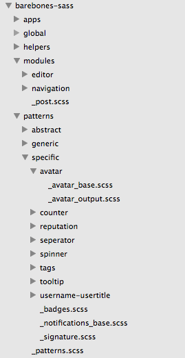

How we use modular Sass at inSided
Anne Ties van Vliet
@anneties
Summary
- inSided current front-end setup
- Why we wanted to change our current way of working
- How we are setting up a modular structure
- Small preview
- Feedback is welcome
inSided
Software as a Service to maintain communities for corporate enterprises.

We can do a little better
- Only one css stylesheet per customer rendered by Sass
- Quicker implementation times
- Make it easier to reuse styles for new projects
- Create a pattern library for the designers to use
- Coding conventions
- Future proof (can we run 1000+ customers?)
Time to refactor
- BEM methodology
- Rewrite templates and Sass and split up in modules
- Create a white-label framework (non-opinionated)
- Be able to compile Sass for every client by running variables through the same central codebase
Render Sass from one central spot
- Put Barebones Sass framework in it's own repository
- Get versioned Barebones in your project with bower
- Feed variables to framework with a settings Sass file, render css into your project
- New core functionalities will automatically be styled when updating a project with bower
- Customize modules/patterns by creating a custom sass file for them into your project
-Projects
|-Client-name
|-Templates
-Assets
-Sass
|-Barebones-sass (repo)
-Custom-sass
settings.scss
output.scss
styles.scss
GruntFile.js
bower.json
styles.scss
//imports this project's settings file.
@import '_settings.scss';
//ALL barebones Sass-functionality
//without outputting any CSS.
@import '../barebones-sass/_core-importer.scss';
//imports all Sass files that will actually output CSS,
//based on the core functionality imported above.
@import '_outputs.scss';
_settings.scss
// Which apps does the client use?
$apps : ('forum');
// brand color(s)
$color-brand : #006;
$color-contrast : #fc3;
$site-width : 980px;
$maincol-width : 100%;
$sidebar-width : 240px;
$gutter : 10px;
_core-importer.scss
@import 'global/grid';
@import 'global/typography/fonts';
@import 'global/typography/type_base';
@import 'global/typography/headers';
@import 'patterns/specific/spinner/spinner_base';
@import 'patterns/specific/seperator/seperator_base';
@import 'patterns/specific/tooltip/tooltip_base';
@import 'patterns/patterns';
output.scss
@import '../barebones-sass/patterns/spinner/spinner_output';
@import '../barebones-sass/patterns/links/links_output';
@import '../barebones-sass/patterns/forms/form-textual_output';
@import '../barebones-sass/patterns/forms/form-labels_output';
@import '../barebones-sass/patterns/forms/forms_output';
@import '../barebones-sass/patterns/avatar/avatar_output';
@import '../barebones-sass/patterns/groups/flag_output';
@import 'additions';

styles.scss
//imports this project's settings file.
@import '_settings.scss';
//ALL barebones Sass-functionality
//without outputting any CSS.
@import '../barebones-sass/_core-importer.scss';
//imports all Sass files that will actually output CSS,
//based on the core functionality imported above.
@import '_outputs.scss';
Grunt build

Let me show you a sass compile
Didn't you talk about a pattern library?

Discussion points
- What would you do different?
- How to keep track of custom code and our default
Thank you for listening
Special thanks to
Follow me on twitter